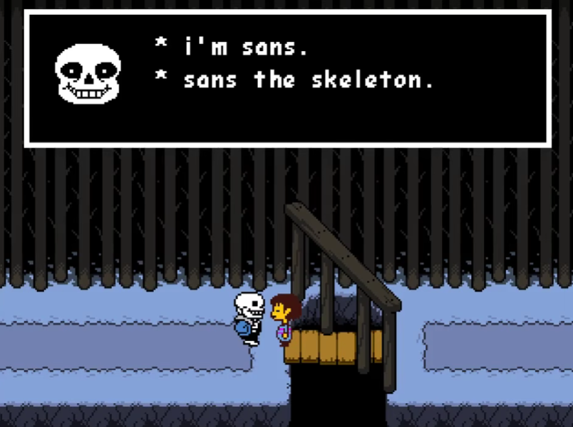
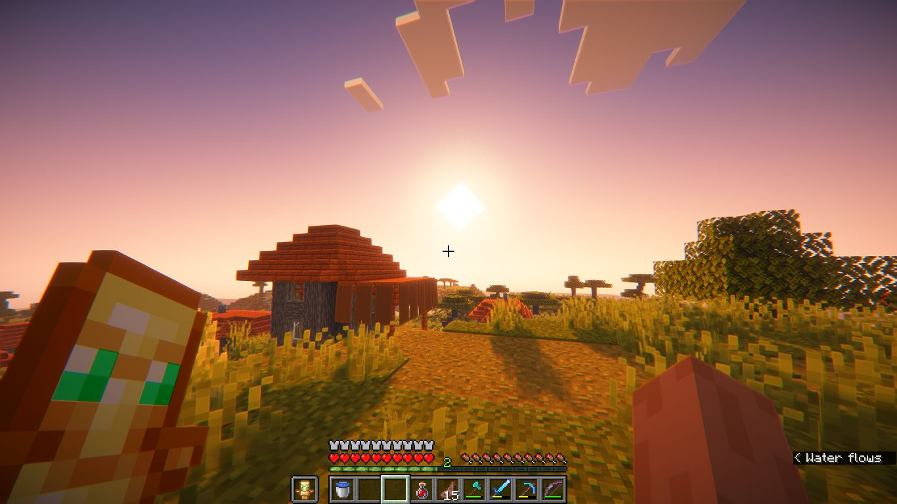
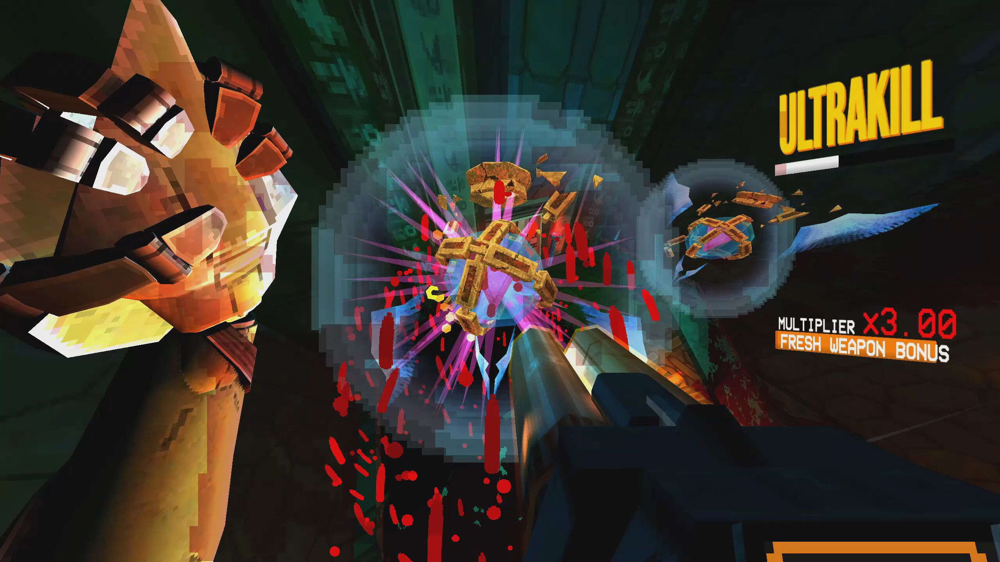
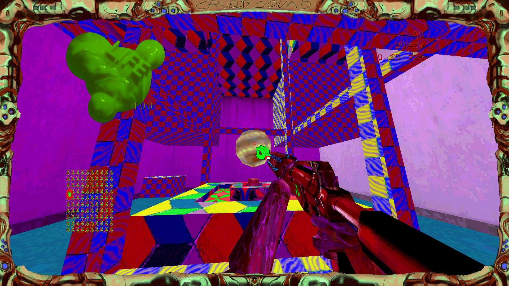
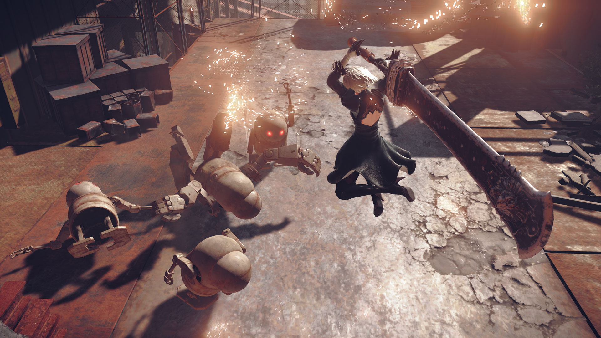

If your life ended tomorrow, what would you regret not having done? For anyone putting together video game recommendations, missing out on the world's most unforgettable digital adventures should definitely be on that list. Video games aren't just a way to kill time — they're interactive masterpieces that can break your heart, test your sanity, and redefine how you see the world. If you're looking for the video games before you die that are absolutely worth your time, these are my top 5 must-try picks.
Undertale

Fall in love with the world of Undertale by falling into Mount Ebott. Ba-dum-tss! A world full of eccentric monsters, bizarre puzzles, and… dogs?! With a rare 10-out-of-10 IGN rating, it's no surprise that it's widely celebrated as one of the greatest games ever created. What makes it unmissable isn't just its genius subversion of classic RPG mechanics — allowing you to negotiate with or spare every single enemy — but its legendary soundtrack and characters that will stick with you forever. If you appreciate unforgettable video game sequences, wacky humor, and petting all kinds of dogs, you have to try this one. Curious about the different endings? I broke them all down in my spoiler-free Undertale routes guide.
Minecraft

Don't let the blocky visuals fool you. Minecraft is an infinite digital canvas for the human imagination. Whether you're building mega-cities, farms, exploring scary underground caves, or just surviving your first night against Creepers, it gives players complete creative freedom over their world. It's a 3D digital sandbox where the limit is your own imagination… and the world height limit, as well. If you'd rather watch someone push it to the absolute limit, don't miss the Minecraft speedrun world record that almost was.
ULTRAKILL

"MANKIND IS DEAD. BLOOD IS FUEL. HELL IS FULL." Prepare for pure, unadulterated, adrenaline-fueled chaos and violence. ULTRAKILL is a lightning-fast, retro-style shooter where blood is your fuel and being stylish is the top priority. You play as a machine diving into the depths of Hell, ricocheting bullets off tossed coins while executing acrobatic kills to a heart-pounding soundtrack. It's relentless, hyper-satisfying, and guaranteed to test your reflexes and creativity in killing demons to the absolute limit.
Cruelty Squad

Have you ever thought about what it would be like being on acid? Consumer Softproducts is here with an absolute fever dream of a game. Cruelty Squad looks like a mid-90s visual headache and plays like a janky yet brilliant tactical-assassination simulator. It's set in a surreal corporatocracy dystopia where you hunt targets given by a handler, navigate noxious environments, and trade on a volatile stock market. It's a graphic and game designer's nightmare, but it somehow works amazingly.
Disclaimer: do not play this game under the influence — you will have a bad time!
Nier: Automata

The final spot goes to a game that continues to persist almost a decade after its release for its amazing gameplay, story, themes, music, and characters. Nier: Automata beautifully depicts humanity through the most unexpected figures — machines and androids trapped in a never-ending proxy war. You play as the androids 2B and 9S, sent to a war-torn Earth to reclaim it from aliens for the glory of mankind. What starts as a fast-paced, hack-and-slash action game quickly evolves into a game with deep, existential themes. This game delivers a narrative experience that will stay with you long after the final credits roll. I go deeper into why it works in my full Nier: Automata review.
Conclusion
Life is short but your gaming backlogs are long, so you better make sure those games in your library are worth your precious time. You have the golden opportunity to play humanity's peak of video games. So, what are you waiting for? Try these games out right now, before you can't anymore!